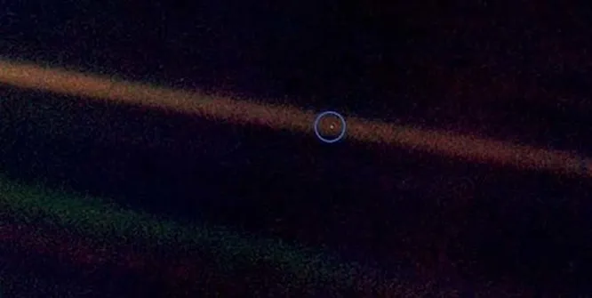
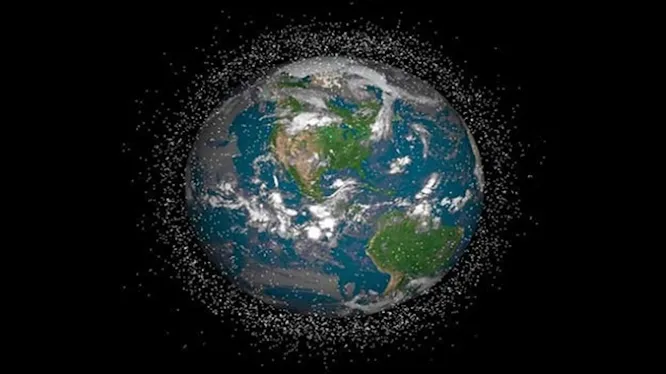
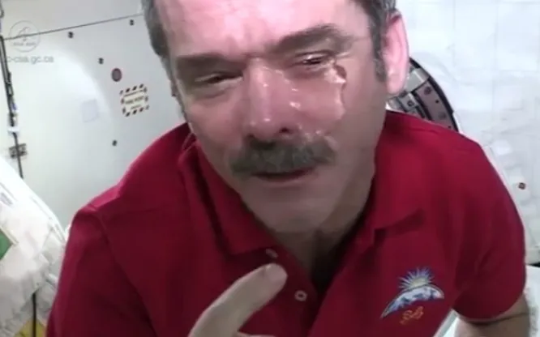
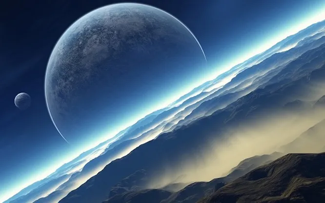
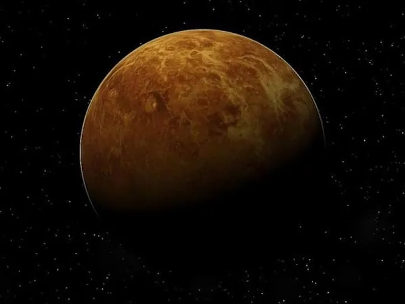
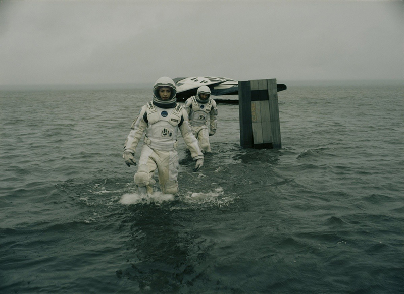

This page contains interesting facts about our universe. Why does time slow down on Venus, Who is buried on the Moon and Are there planets in the solar system other than those known to us? You will learn this much more in the section Interesting Facts of a Space Odyssey
The small pale blue dot in the photo is our planet, taken by the Voyager I space probe. In 1990, this “distant” photograph of the Earth was taken from a record distance of 6 billion kilometers. The image of the planet takes up only 0.12 pixels. According to Carl Sagan, an American astronomer and cosmonaut, the radio signal with the resulting photo reached our planet in 5.5 hours. Here's an additional fact about space and this incredible image: The light streak the planet is in is a halo caused by sunlight scattered through the camera's optics due to the low angle between the Earth and the Sun.The Voyager I probe also took images of other planets: Venus, Jupiter, Saturn, Uranus and Neptune. Thus, NASA scientists compiled an unusual “Family Portrait” of the Solar System - that’s what they called a series of 60 frames of space objects combined into a mosaic. There were some difficulties: due to the proximity of Mercury and Mars to the Sun, the planets were not visible to the optical eye. Another interesting fact about space can be called the “reconstruction” of the famous photograph. In 2020, for the anniversary of the image, NASA made a new version of the image and called it “Return to the Pale Blue Dot.”
The most interesting thing in space is the composition of the planets, which makes their color unique. Even in ancient times, Mars was called the Red Planet precisely for its characteristic rusty hue. The color of a space object is influenced by the concentration of minerals in the soil and the red layer of dust through which the sun's rays pass in the atmosphere. The European Space Agency's Mars Express interplanetary station conducted a series of experiments with mineral oxidation in 2004. Thanks to experiments, scientists have confirmed the presence in rocky soils of a high content of iron particles, in particular magnetite and maggenite. They cover the entire surface of the Red Planet and go to a distance of up to 100 micrometers into the depths of desert spaces.In addition to the previous space fact, sunsets and sunrises on Mars can range from pink to yellow-brown. This is due to light scattering and water ice in the atmosphere.
Today, one of the saddest facts about space is the pollution of near-Earth space. More than 8 thousand pieces of space debris revolve around the Earth’s orbit - artificial objects that can never again serve the original purposes of earthlings. At the same time, they pose a serious danger to spacecraft: satellites located beyond the Earth risk serious damage, and the launch of new rockets may become impossible in the near future.The US National Institute of Standards and Technology shared an interesting fact about space. According to the radar data they developed for 2021, there are about 128 million pieces of debris larger than 1 mm and 34 thousand pieces of debris larger than 10 cm in outer space. On the interactive map AstriaGraph, created by a scientist from the University of Texas Moriba Jha, you can observe 26 thousand of the largest objects that are in Earth orbit.
99.8% of the mass of the Solar System is the mass of the Sun. All other space objects occupy only 0.14% of the total mass. The largest share of mass after the star falls on the planets Jupiter - 0.10% and Saturn - 0.05%. This amazing fact about space can be supplemented: the mass of the Sun is 750 times greater than all the planets of the solar system combined. The star is so large that it can hold other bodies in outer space in orbit around itself. The mass of the Sun is 332,946 times greater than the mass of the Earth: the star can accommodate 1 million of our planets. However, the Sun is far from the largest recorded object in the Universe: the red supergiant UY Scuti, or UY SCUTI, is 5 billion times larger in volume and 340 thousand times brighter.
The next interesting fact about space and astronauts is that crying in vacuum is quite painful. It's all about gravity: salty liquid begins to accumulate on the face in the form of a bubble under the eye and slowly spreads, remaining in the nose or ears. A similar picture was shared by Canadian astronaut Chris Hadfield, who is active on social networks and shows the process of working on board the International Space Station. But in the case of Chris Hadfield, these were not tears of happiness: there was a foreign object in the astronaut’s eye, blinding him for some time.
In space we will not hear any sounds, because air is needed for their propagation. Sound is the vibration of molecules, which is possible only when pressure fluctuates. The greater the pressure drop, the louder we perceive the voices of the world around us. For example, if you pump out air from under the hood, creating a vacuum inside, the sound inside the glass will reach a minimum. The main interesting fact about space is its similarity to vacuum space. The density of air is so low that molecules simply do not collide with each other - and do not create any sound waves.This does not mean that we will not hear the collision of large asteroids - just that the sound will be absorbed into space after a few seconds. At the same time, gravitational waves propagate through space, which radio telescopes can convert into melodies of space. So, in 2022, people were able to hear the voice of Mars thanks to microphones installed on board the NASA Perseverance rover - these were gusts of Martian wind and the rattling of the rover colliding with a rock. An additional unusual fact about space and man says: absolute silence will disrupt the functioning of our lungs and circulatory system.
Every minute the Earth flies 19,300 kilometers. Let us note another interesting fact about our planet: its rotation around its axis takes 23 hours 56 minutes. What do you do with another 4 minutes? They are needed for the Sun to return to its original position. Atomic clocks have shown that the speed of rotation of the Earth is not constant, and from time to time it slows down. But in 2020, our planet only accelerated - on July 19, scientists recorded the shortest day in history, which ended 1.4602 milliseconds earlier than usual. By December the lag had increased, making the year shorter by 3 minutes. A new record was set on July 26, 2022: the day lasted 1.5 milliseconds less than the usual 24 hours.
There are many more interesting planets in space than we think. And they stand out for their physical characteristics, which directors often show in science fiction films. Thus, the weather on exoplanet HD189733b is not the best: molten glass constantly rains on its surface, and winds consisting of pieces of salt blow at a speed of about 9 km/h. The planet's atmosphere is covered in tiny dust of iron, silicon and aluminum oxide, creating a hazy haze that gives the planet its blue color. The temperature of the star, according to data from the automatic Hubble Observatory, is more than 1 thousand degrees Celsius - this is one of the hottest space objects known to scientists today. It is the scorching temperatures that turn dust particles into glass, which rise above the surface like a tornado.In addition to this fact about space, we will also declassify the location of the unusual planet so that you know where you definitely shouldn’t fly next weekend. This bright blue gas giant lives in the constellation Vulpecula, 63 light-years from the Sun.
In 2021, scientists at the University of California, Los Angeles determined the exact length of the day on Venus. One day on this planet lasts 243.02 Earth days, that is, approximately two-thirds of the year we are used to. How and why did this incredible fact about space come about? The fact is that Venus is the only planet in the solar system whose own rotation is opposite to the direction of its revolution around the Sun. So in one Venusian year, the sun rises and sets only twice. In addition, the rotation speed of Venus always changes: scientists have recorded a difference of at least 20 minutes. The reason for this is the planet's heavy atmosphere, which is 93 times more massive than the Earth's atmosphere.
The solar system is the most studied part of outer space. According to the official version, it includes eight planets. In reality there are much more of them. There are at least five “dwarfs” here alone. These are Pluto, Ceres, Haumea, Makemake and Eris. Due to their distance from Earth, they have been little studied. Moreover, according to scientists, there may be about 2 thousand more potential dwarf planets in the Solar System. In addition, many astrophysicists recognize the presence of a ninth major planet. It is the size of Neptune and ten times heavier than Earth. Scientists began to guess about the existence of the mysterious Planet X back in 2014, and in 2016 they received the first evidence using computer modeling.
Due to gravity, time passes differently in space. The more powerful the gravitational field, the more time slows down. This phenomenon is illustrated in the film Interstellar by Christopher Nolan. When the heroes get to planet Miller, an hour for them turns out to be equal to seven earthly years. Returning on board the spacecraft after just over three hours, the astronauts find their already gray-haired colleague who had been waiting for their return for 23 long years. Almost the same thing happens in reality. For example, time passes a fraction of a second faster for astronauts than for people on Earth. And near a black hole it almost completely stops.
If the Earth's satellite disappears, most likely, a global catastrophe will not happen. Once upon a time it was the main source of light in the dark - now people know how to do without it. Still, some major changes will occur. For example, many water sports will end. The phases of the Moon influence the waves - passing over the surface of our planet, it “pulls” masses of water with it. In addition, marine life, whose life is directly related to the ebb and flow of the tides, will become extinct. Without a satellite, there will be no solar or lunar eclipses on Earth, and tectonic plates will shift, causing earthquakes and volcanic eruptions. But the main thing is that the planet’s climate will no longer be the same.
Copyright ©2023 All rights reserved
This template is made with by Lesnic Dumitru, gr. MI21Z
Faculty of Real, Economic and Environmental Sciences
"Alecu Russo" State University from Balti